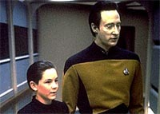
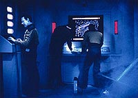
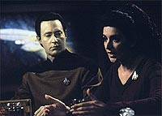
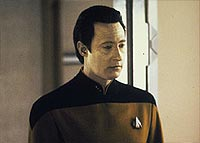

|
MANCHETE
DO EPISÓDIO
Data
resgata um menino e reaviva
sua velha "síndrome de Pinóquio"
Episódio
anterior | Próximo
episódio
Sinopse:
Data Estelar: 45397.3.
A Enterprise visita uma base estelar que perdeu recentemente o
contato com a Vico, uma nave de pesquisa enviada para explorar o
interior de um algomerado negro. Ao localizar a nave, Picard envia
um grupo avançado para investigar a situação. Data e Riker ficam
chocados a descobrir um menininho preso nas ferragens da pequena
nave.
Após várias tentativas mal-sucedidas, a tripulação é finalmente
capaz de resgatar e transportar o menino para a enfermaria. O jovem,
Timothy, se apega imediatamente a Data. Enquanto isso, na ponte,
Picard e Geordi estudam os detalhes dos eventos que levaram à
explosão da nave. Timothy contou à tripulação que a Vico foi
atacada por uma nave alienígena.
 Entretanto,
resultados preliminares das pesquisas indicam que Timothy mentiu
sobre o que aconteceu, já que a nave não foi abordada como ele
havia relatado. Incomodados por essa revelação, Picard e Troi
instruem Data a passar mais tempo com o menino, na esperança de que
ele conte ao andróide o que de fato se passou.
Conforme Data e Timothy passam mais tempo juntos, o menino fica cada
vez mais intrigado por seu novo amigo e por suas excepcionais
capacidades física e mental. Ele logo começa a agir e falar como
Data, simulando alguns de seus maneirismos andróides. Mais tarde,
Troi fica incomodada quando ela vai ver Timothy e o encontra vestido
com roupa similar à de Data e se dizendo um andróide. Troi discute
suas preocupações com Picard, sugerindo que o comportamento de
Timothy é provavelmente o resultado da experiência traumática de
perder seus dois pais na explosão.
Continuando sua investigação, Picard ordena a tripulação a
conduzir a Enterprise ao aglomerado negro. Uma vez lá dentro, a
nave começa a ser atingida por ondas de choque. Conforme a
intensidade aumenta, Picard chama Timothy à ponte. O menino
inicialmente mantém sua história de que a nave foi atacada, mas
quando Data lembra a ele de que andróides não mentem, ele revela
que acredita ser responsável pela destruição da nave.
 A tripulação,
entretanto, consegue convencê-lo de que a nave foi destruída por
causas naturais. Isso não deixa a mente do rapaz totalmente
tranquila, porque as ondas de choque sobre a Enterprise começam a
aumentar de intensidade. Data é capaz de guiar a nave através do
bombardeio, indicando onde a trpulação da Vico cometeu o erro que
causou a destruição da nave. Mais tarde, fora de perigo, Timothy
consegue retornar à sua vida normal, e Data e ele decidem por
permanecer amigos.
Comentários:
"Hero
Worship" é mais um episódio nessa temporada que envolve
crianças, e mais um "estudo" sobre Data, dessa vez
mostrando seu lado pinóquio de "quero ser humano...". A
presença de crianças começa a ser cada vez mais freqüente na série,
dando bem o tom "família" a que a série estava se
propondo. Infelizmente, esse tipo de incursão invariavelmente
acabou resultando em roteiros pouco criativos. Esse não foi
diferente.
O episódio traz o garoto Timothy adorando Data por tê-lo salvo da
USS Vico. A atuação de Josua Harris não compromete, mas o
contexto em que o garoto está deveria ser mais explorado. Onde já
se viu uma criança que perde os pais de uma maneira tão traumática
não derramar uma lágrima durante o episódio, a não ser quando se
culpa por ter destruído a Vico. Nesse ponto, a participação do
garoto deixou demais a desejar. Só nos é lembrado que ele agora é
um orfão quando Troi está em cena com Data e ao final. Pergunto-me
em que base estelar deixaram Timothy entre "Hero Worship"
e "Violations", o episódio
seguinte, já que parece que ninguém lembrará mais dele durante o
restante da série.
 Troi mostra aqui
que tem diploma de Psicologia. Age como uma verdadeira terapeuta de
bordo e praticamente força Data a aceitar que o garoto se
transforme em seu pequeno clone. A relação Data-Timothy é bem
interessante e até tocante, e é através dela que a "síndrome
Pinóquio" de Data é explorada.
Como todo bom episódio de uma série de televisão, "Hero
Worship" tem dois enredos que se encontram em algum ponto.
Além de Timothy-Data, o aglomerado negro é a bola da vez aqui. O
final deixa um pouco a desejar, com Riker dizendo que a solução de
Data (desligar os escudos protetores) "É suicídio!". Com
cinco anos de Nova Geração nas costas, eu não discordaria
de Data em uma situação como essa. Mas se faz parte inserir um
clichê básico como este, vamos em frente. Afinal, Picard acata a
sugestão, e Riker não discute com o chefe.
 A
segunda direção de Patrick Stewart foi mais uma vez sem novidades,
mas deve ser destacada a cena em que Data constrói em velocidade
recorde a maquete de Timothy. A montagem ficou boa.
"Hero Worship" não é horrível, mas, comparado ao
potencial demonstrado pela Nova Geração, não passa de um
episódio do terceiro escalão. Felizmente, como não é pretencioso,
acaba não comprometendo.
Citações:
Data - "I am
designed to exceed human capacity, both mentally and physically."
("Eu sou projetado para exceder a capacidade humana, tanto
mentalmente quanto fisicamente.")
Troi - "Hello, Timothy. Are you ready to go?"
("Olá, Timothy. Está pronto para ir?")
Timothy - "Yes, counselor, I am ready."
("Sim, conselheira, eu estou pronto.")
Troi - "How are you feeling?"
("Como está se sentindo?")
Timothy - "I am functioning within established parameters."
("Eu estou funcionando dentro dos parâmetros
estabelecidos.")
Trivia:
 Esse foi o segundo episódio da série dirigido por Patrick Stewart.
Stewart dirigiu no total cinco episódios da Nova Geração.
Esse foi o segundo episódio da série dirigido por Patrick Stewart.
Stewart dirigiu no total cinco episódios da Nova Geração.
A USS Vico é idêntica à USS Grisson de "Jornada nas
Estrelas III", construída e transformada em um destroço
por Greg Jein.
Nesse episódio é mencionado mais uma vez os Breen. Essa raça já
foi citada no episódio "The Loss",
do quarto ano. Os Breen tiveram uma participação enorme nos episódios
finais de Deep Space Nine.
Joshua Harris, o Timothy, nasceu em 27/11/1978. Além da Nova
Geração, Joshua fez participações na série
"Dallas" (como um recém-nascido) e "Twin Peaks".
Ficha
técnica:
História de Hillary J. Bader
Roteiro de Joe Menosky
Direção de Patrick Stewart
Exibido em 27/01/1992
Produção: 111
Elenco:
Patrick Stewart como
Jean-Luc Picard
Jonathan Frakes como William Thomas Riker
Brent Spiner como Data
LeVar Burton como Geordi La Forge
Michael Dorn como Worf
Gates McFadden como Beverly Crusher
Marina Sirtis como Deanna Troi
Elenco convidado:
Joshua Harris como
Timothy
Harley Venton como chefe de transporte
Sheila Franklin como alferes Felton
Steven Einspahr como o professor
Episódio
anterior | Próximo
episódio
|